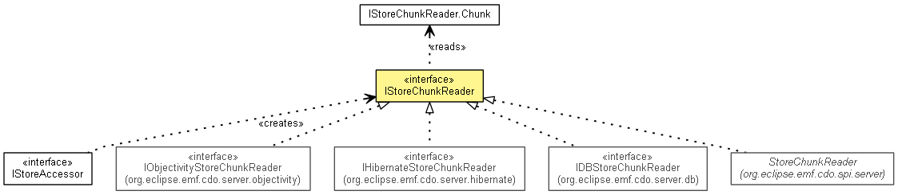

org.eclipse.emf.cdo.server
Interface IStoreChunkReader
- All Known Subinterfaces:
- IDBStoreChunkReader, IHibernateStoreChunkReader, ILissomeStoreChunkReader, IObjectivityStoreChunkReader
- All Known Implementing Classes:
- StoreChunkReader
- public interface IStoreChunkReader

Reads chunks of
partially loaded lists from a physical data storage backend.
|
Nested Class Summary |
static class |
IStoreChunkReader.Chunk
Represents a sublist of consecutive elements that are subject to partial
collection loading. |
getAccessor
IStoreAccessor getAccessor()
- Since:
- 2.0
getRevision
CDORevision getRevision()
getFeature
EStructuralFeature getFeature()
- Since:
- 2.0
addSimpleChunk
void addSimpleChunk(int index)
addRangedChunk
void addRangedChunk(int fromIndex,
int toIndex)
- Parameters:
fromIndex - Inclusive value.toIndex - Exclusive value.
executeRead
List<IStoreChunkReader.Chunk> executeRead()
Copyright (c) 2011, 2012 Eike Stepper (Berlin, Germany) and others.